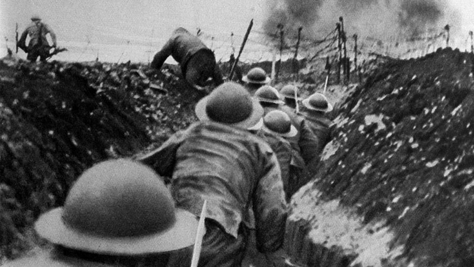
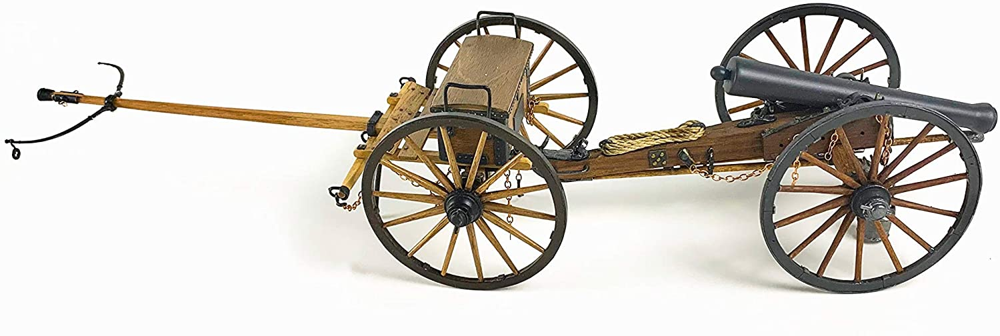
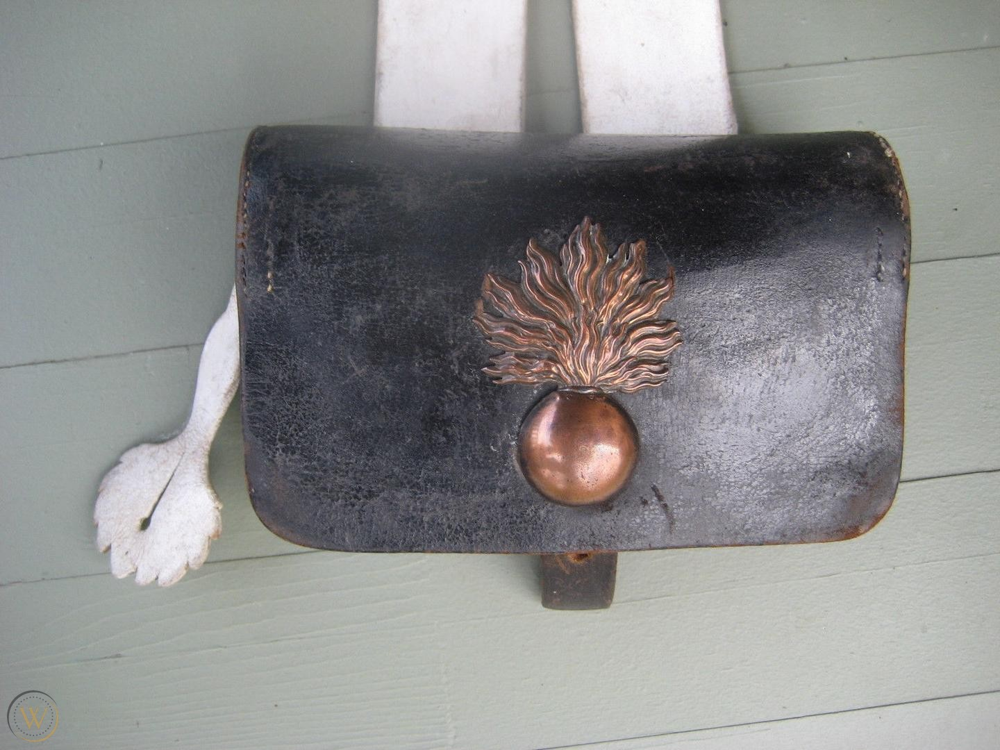
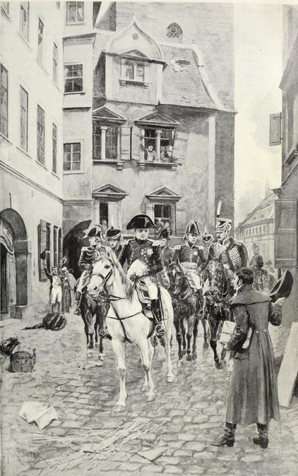

보로디노 에필로그 (4) - 자기 모순
게시: 2020-11-09T06:30:45+09:00
한편, 프랑스군의 피해도 만만치는 않았습니다. 적게는 2만8천부터 많게는 4만까지 피해 추정치는 다양한데, 여기서는 대략 3만5천이라고 보겠습니다. 프랑스군의 전력을 대략 14만이라고 가정한다면, 약 25%의 피해였습니다. 거의 40%의 손실을 낸 러시아군에 비하면 훨씬 적은 편이었지만, 어지간한 전투에서 패배했을 때나 내던 손실이었습니다. 러시아군의 피해를 4만5천이라고 가정하면 하루 아침에 양측이 무려 9만5천의 피해를 낸 셈이었습니다. 이는 당대 유럽 전사상 단 하루에 가장 많은 사상자를 낸 전투였고, 이 기록은 제1차 세계대전 1916년 7월 1일 솜므(Somme) 전투 때까지도 깨지지 않았습니다.

(솜므 전투는 영불 연합군이 독일군을 몰아내기 위해 벌인 전투입니다. 약 140일간 이어진 전투에서 양측 총인원 3백만명이 동원되었고, 그 중 1백만명이 전사하거나 부상을 입었습니다.) 그러나 솜므 전투는 볼트 액션식 라이플 소총과 맥심 기관총, 그리고 충격신관이 장착된 무시무시한 중포 뿐만 아니라 탱크까지 동원된 근대식 전투으므로 그렇게 많은 사상자가 나는 것도 이해가 갑니다. 1분당 기껏해야 2발이 최대 발사 속도였던 부싯돌 점화 방식의 머스켓 소총과 쇳덩어리 대포알을 쏘는 그리보발(Gribeauval)식 대포만 동원된 1812년 보로디노 전투에서 어떻게 그렇게까지 많은 사상자가 났을까요 ? 가장 큰 주범은 역시 대포였습니다. 미숙한 러시아군을 데리고 숙련된 프랑스군에 대항해서 기동전을 펼칠 자신이 없었던 쿠투조프가 좁은 지역에 이중 삼중으로 많은 병력을 배치하여 밀집 방어선을 구축했는데, 예전 같으면 이들을 포위하거나 우회 공격했을 나폴레옹이 어떻게든 일단 러시아군이 도망치지 않고 싸우도록 강요해야 한다는 절박함 때문에 정면 공격이나 다름없이 다소 어설픈 측면 공격을 가하다보니, 좁은 지역에서 밀집된 병력끼리 충돌이 벌어졌습니다. 그런 상황에서 양군이 프랑스군 587문, 러시아군 637문의 엄청난 포병대를 동원하여 죽어라 대포알을 쏘아댔으니 피해가 클 수 밖에 없었습니다. 러시아군은 포병 총사령관 쿠타이소프 장군의 전사와 쿠투조프의 나태함 때문에 그 많은 대포들 중에서 무려 300문이 예비대로 묶여 있긴 했습니다만, 그래도 보로디노 전투는 당대 벌어진 전투 중 가장 치열한 화력전이었습니다. 프랑스군은 이 날 하루 동안 9만1천발의 포탄을 발사했고 140만발의 머스켓 총탄을 쏘았습니다. 이건 전투가 10시간 이어졌다고 산정하면 1분에 약 150발의 포탄과 2,300발의 머스켓 총탄을 발사했다는 소리입니다. 나폴레옹이 셰바르디노 언덕을 내려와 라에프스키 보루 쪽을 향할 때, 나폴레옹과 참모들이 말을 몰던 평원에는 발사된 머스켓 볼(musket ball)들이 마치 평원에 내린 우박처럼 가득 했다고 하는데, 그것이 터무니 없는 과장은 아니었던 것입니다.

(나폴레옹 전쟁 당시의 대포와 탄약차, 즉 limber가 연결된 모습입니다. 포병대의 숙명은 대포도 무겁지만 탄약도 무겁다는 것이지요.) 이렇게 대포알이 빗발치는 가운데 쿠투조프가 이중 삼중으로 밀집 부대를 배치하는 바람에 러시아군의 피해가 컸다고 했지요. 실은 그건 나폴레옹도 마찬가지였습니다. 아침 6시에 전투가 시작될 때부터, 대부분의 전투 부대는 러시아군 포병대의 사정거리 안에 배치되어 있었습니다. 이건 꼭 바보짓이라고 욕할 것만은 아니었습니다. 나폴레옹은 러시아군을 격멸시키는 것이 목표였으므로, 가능한 한 많은 병력을 전진배치하여 묵직한 타격을 신속히 꽂아넣어야 했습니다. 그러나 나폴레옹이 이 날 저지른 실수 중 가장 뼈아픈 것은 오후 12시와 3시 사이에 거의 3시간 넘게 우물쭈물 했다는 것입니다. 그것도 적을 견제하기 위해 대부분의 예비 기병대를 대포가 즐비한 라에프스키 보루 앞에 포격 연습 목표물로 3시간 넘게 세워놓았으니 특히 기병대의 피해가 막심했습니다. 게다가 근위대의 투입을 원하는 부하들의 요청을 거부하고 기병대를 투입하여 라에프스키 보루 방어선을 뚫으려 했으니, 역사책에야 기병으로 요새를 점령한 사례라는 기록을 남겼겠지만, 가뜩이나 식량 부족 문제로 말들이 픽픽 쓰러지던 나폴레옹의 기병대는 여기서 거의 다 소진되는 결과를 낳았습니다. 그리고 이건 나중에 모스크바에서 후퇴할 때 전체 그랑다르메에게 치명적인 약점으로 작용하게 됩니다. 그럼에도 불구하고 분명히 이 날 전투는 프랑스군의 승리였습니다. 제1선 부대들이 집중적으로 궤멸적인 타격을 입은 러시아군과는 달리, 프랑스군의 손실은 기병대를 제외하고는 대부분의 부대들이 고르게 20~30%의 정도씩 손실을 입었고, 적지 않은 고위 장교들이 전사했지만 프랑스군의 명령 체제는 전혀 흔들리지 않았습니다. 상급자가 전사하거나 부상당하더라도 하급자가 자동으로 승진하여 부대를 통솔하게 되어 있었기 때문이었습니다. 다만 러시아군과는 달리 손실된 병력을 보충할 길이 마땅치 않았습니다. 이론상으로는 지금도 프랑스와 이탈리아, 라인 연방 등지에서 신병들이 징집되어 모스크바로 오게 되어 있었습니다만, 여태까지 그랑다르메가 겪은 바를 생각하면 그건 결코 쉽지 않은 도전이었습니다. 그보다는 당장 부족한 식량을 어떻게 마련할 것이냐가 문제였는데, 그건 곧 모스크바를 점령하면 쉽게 해결될 것으로 기대 되었습니다. 프랑스군이 이 전투에서 겪었던 가장 심각한 문제는 그럭저럭 나쁘지 않았던 작전에도 불구하고, 다부와 네와 쥐노가 이끄는 3개 군단이 러시아군 방어선을 돌파하지 못했다는 것이었습니다. 아무리 제대로 먹지 못해 쇠약해졌다고 해도 프랑스군의 공격력을 막아내는 것은 보통 어려운 일이 아니었습니다. 예나-아우어슈테트에서의 프로이센군도, 바그람 전투에서의 오스트리아군도 그걸 해내지 못했는데 보로디노에서의 러시아군은 해냈습니다. 쿠투조프의 양파 전술이 위력을 발휘한 것도 있었지만, 그보다는 배운 것 없고 경멸당하던 농노 출신의 러시아 병사들이 죽음을 두려워하지 않고 끝끝내 버티어냈다는 것이 가장 큰 요인이었습니다. 무엇이 러시아 병사들에게 꿋꿋히 제자리에서 죽음을 맞이하게 했을까요 ? 불과 7년 전, 아우스테를리츠에서는 쉽게 중앙을 돌파당했던 러시아군에게 무슨 일이 생겼던 것일까요 ? 이건 나폴레옹 본인이 자초한 바가 컸습니다. 1789년 대혁명 이후 프랑스군이 전유럽을 상대로 연전연승 할 수 있었던 것은 바로 혁명 정신 그 자체가 병사들 모두에게 스며들었기 때문이었습니다. 신분제가 아닌 개인의 재능으로 사회적 위치가 정해진다는 것은 여태까지 유럽 세계에서 들어보지 못한 새로운 개념이었습니다. '모든 프랑스 병사들은 잡낭 속에 원수봉을 넣고 다닌다' (Tout soldat français porte dans sa giberne le bâton de maréchal)라는 말이 그랑다르메의 강인함을 설명하는 가장 적절한 말이지요. 이건 단순한 구호가 아니라 여관집 아들 출신, 채소집 아들 출신, 염색공 출신 등이 왕이 되고 원수가 된 것으로 증명되는 것이었습니다. 프랑스군은 패주하다가도 다시 집결하여 역전승을 이끌어내는 경우가 허다했는데, 이는 우수한 지휘관이 있기 때문이기도 했지만, 병사들 개개인이 스스로 용맹을 발휘할 이유가 충분했기 때문이었습니다. 귀족이 지배하는 신분제 사회인 프로이센과 오스트리아에서는 그런 것을 흉내낼 수가 없었습니다. 물론 러시아에서는 그런 신분제가 더욱 심했습니다.

(지베른(giberne)이라는 것은 어깨에 걸어서 허리춤에 차는 잡낭을 뜻합니다. 영국군의 경우 haversack이라는 잡낭에 해당합니다. 사진 속의 물건은 나폴레옹 시대 척탄병 부대의 지베른입니다. 불붙은 폭탄이 인상적이지요 ?) 나폴레옹은 군사적 수완 못지 않게 정치적 수완이 대단한 인물이었습니다. 그의 군대가 침공하는 곳은 무자비한 병참 장교들이 약탈에 가까운 징발을 하기도 했지만 나폴레옹 법전으로 대표되는 새로운 질서도 함께 찾아 왔습니다. 침공당하는 나라의 국민들은 나폴레옹을 결코 혐오하지는 않았습니다. 프로이센의 철학자이자 당시 예나 대학의 교수였던 헤겔 (Georg Wilhelm Friedrich Hegel)이 예나 전투 하루 전날, 나폴레옹이 정찰을 위해 말을 타고 나서는 모습을 보고 감명을 받아 어느 친구에게 "세계의 정신(World-Soul)이 말 위에 올라탄 모습을 보았다" 라고 감탄하는 편지를 썼다는 일화가 그를 극명하게 보여주는 이야기입니다. 그런 점 때문에 이탈리아 병사들이건 오스트리아 병사들이건 자기들을 수탈하는 자기 나라 귀족들을 위해 나폴레옹의 프랑스군과 죽어라 싸울 이유가 없었습니다. 특히 프로이센 시민 계급의 경우에는 오히려 개혁을 위해 나폴레옹을 환영하기도 했습니다. 폴란드 같은 나라는 온 민족이 나폴레옹을 위해 기꺼이 목숨을 바칠 준비가 되어 있었고요.

(헤겔이 나폴레옹을 만나는 장면입니다. 실은 만난 것이 아닙니다. 헤겔은 먼 발치에서 나폴레옹을 보았을 뿐이었고, 나폴레옹은 쳐다보지도 않았으며 헤겔이라는 사람이 철학자인지 수학자인지 알지도 못했습니다.) 그러나 나폴레옹은 유럽 어느 곳보다도 낙후된 러시아에 대해서는 그런 정치 공작 행위를 할 생각을 전혀 하지 않았습니다. 당시 러시아는 유럽에서 마지막으로 남은 농노제 국가였고, 우아한 귀족들이 무식하고 가난한 농민들을 무자비하게 쥐어짜는 사회였습니다. 그런 러시아를 공략하기 위해서는 당연히 농노제 폐지라는 카드를 처음부터 꺼내들어야 했습니다. 하다 못해 러시아 본토가 아닌 리투아니아 지방에서는 옛 폴란드-리투아니아 연방의 부활을 선언하기라도 해야 했습니다. 그러나 나폴레옹은 아무 것도 하지 않았습니다. 당연히 러시아 농노들이 들을 수 있었던 것은 '나폴레옹이라는 외국 괴물이 친애하는 짜르와 성스러운 정교를 무너뜨리기 위해 조국을 침공했다'라는 러시아 민족주의적인 선동 뿐이었습니다. 러시아 농노 출신의 병사들은 좋든 싫든 자신들이 아는 유일한 삶의 방식, 즉 러시아 사회 질서를 지키기 위해 싸울 수 밖에 없었습니다. 왜 나폴레옹은 당연히 썼어야 할 카드를 쓰지 않고 이런 어려운 싸움을 감당했을까요 ? 그건 러시아 원정이 품고 있던 근본적인 문제점 때문이었습니다. 그가 알렉산드르에게 원했던 것은 평화 조약이었습니다. 그는 농노제 폐지나 폴란드-리투아니아 연방의 부활을 선포한다는 것은 알렉산드르와는 되돌릴 수 없는 선을 넘는 것이라는 것을 잘 알고 있었습니다. 원하는 것이 평화 조약인데 그래서 취한 행동이 전쟁이다 ? 이건 어딘가 좀 이상한 논리 전개입니다. 그리고 그 문제는 러시아 원정 내내 나폴레옹을 헷갈리게 했고 결국 나폴레옹을 파멸로 이끕니다. Source : 1812 Napoleon's Fatal March on Moscow by Adam Zamoyski
en.wikipedia.org/wiki/Battle_of_Borodino
en.wikipedia.org/wiki/Battle_of_the_Somme
www.worthpoint.com/worthopedia/french-grenadier-napoleonic-giberne-1900798270